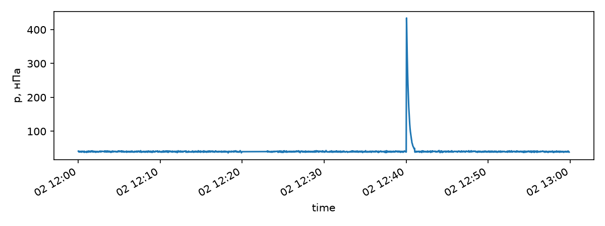
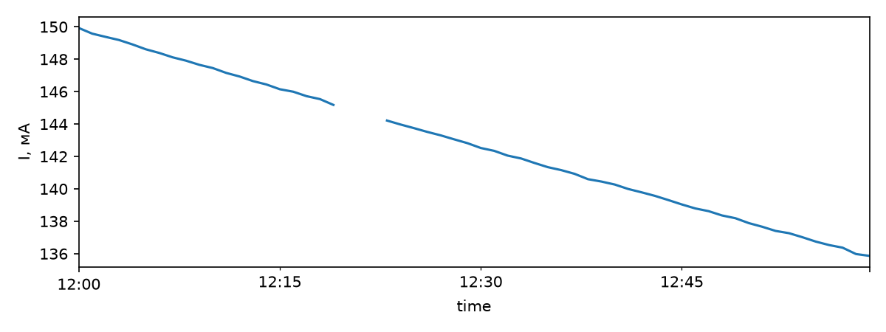

NumPy и pandas
Физик обращается к языку программирования ради данных, поэтому начать целесообразно с инструментов, приспособленных для быстрых вычислений над ними. В настоящей главе рассматриваются две библиотеки: NumPy, предоставляющая многомерный массив чисел одного типа, и pandas, предоставляющая таблицу с именованными столбцами разных типов. Все примеры выполнены в IPython на одной машине — виртуальной машине с двумя ядрами под Python 3.12 с NumPy 2.5 и pandas 3.0, на которой записаны демонстрации лекции «NumPy, pandas и SciPy».
Слайды к главе. Устройство массива, индексация, векторные операции, типы элементов и чтение файлов изложены также в первых трёх частях лекции «NumPy, pandas и SciPy» с демонстрациями в терминале; слайды лекции доступны на сайте книги и в PDF.
NumPy
Python поначалу разочаровывает: список из миллиона чисел занимает десятки мегабайт, а цикл по нему выполняется очень долго. Причины, рассмотренные в главе про объекты и память, сводятся к одному: каждое число в списке является отдельным объектом со своей обёрткой, размещённым где-то в куче.
Решением является NumPy. Идея заключается в том, чтобы хранить числа так, как их хранит C, то есть подряд, одного типа, без обёрток, а операции над ними передавать скомпилированному коду, работающему сразу над всем массивом. Выигрыш достигает сотен раз. На NumPy построен научный стек: SciPy, pandas, scikit-learn и библиотеки машинного обучения используют массивы NumPy.
Полная документация: numpy.org/doc.
NumPy решает две задачи:
- хранить многомерные массивы (в том числе матрицы);
- быстро считать математические функции сразу от всего массива.
Основой библиотеки является один объект, ndarray.
Отличия массива от списка:
- длина массива, заданная в момент создания, остаётся неизменной, тогда как список растёт динамически;
- все элементы массива одного типа;
- операции пишутся сразу над массивом целиком, без цикла.
Отсюда следуют две сильные стороны NumPy: векторизация и broadcasting.
import sys
import numpy as np
lst = [float(i) for i in range(10**6)]
print(sys.getsizeof(lst) + sum(sys.getsizeof(v) for v in lst))
print(np.array(lst).nbytes)
32448728
8000000
Список из миллиона вещественных чисел вместе с объектами-числами занимает около 32,4 МБ: 8,4 МБ приходится на массив ссылок самого списка, 24 МБ — на объекты float по 24 байта. Массив NumPy хранит те же числа подряд, по 8 байт на число, и занимает ровно 8 МБ.
Устройство массива
Массив состоит из буфера данных и заголовка, описывающего, как этот буфер читать: тип элементов dtype, форму shape — длину по каждой оси — и шаги strides, то есть сдвиги в байтах при увеличении индекса по каждой оси на единицу.
m = np.arange(12.0).reshape(3, 4)
print(m.dtype, m.shape, m.ndim, m.strides, m.itemsize, m.nbytes)
t = m.T
print(t.shape, t.strides, np.shares_memory(m, t))
float64 (3, 4) 2 (32, 8) 8 96
(4, 3) (8, 32) True
Матрица 3×4 из float64 записана по строкам: переход к следующему столбцу сдвигает адрес на 8 байт, к следующей строке — на 32 байта, поэтому адрес элемента m[i, j] равен началу буфера плюс 32·i плюс 8·j. Транспонирование не переставляет числа в памяти, а меняет шаги местами и возвращает представление — новый заголовок над тем же буфером. Метод reshape тоже возвращает представление, если новую форму можно описать шагами над тем же буфером, а иначе копирует данные:
np.shares_memory(m.reshape(2, 6), m), np.shares_memory(m.T.reshape(12), m)
(True, False)
Столбцы матрицы m не лежат в буфере подряд, поэтому вытянуть транспонированную матрицу в вектор без копирования нельзя.
Способы создания массивов
Массив может быть получен тремя способами: преобразованием из обычной структуры Python, генерацией встроенной функцией или чтением с диска. Все три способа встречаются примерно одинаково часто.
Конвертация из структур Python
np.array([1, 2, 3, 4, 5])
array([1, 2, 3, 4, 5])
При конвертации можно задавать тип данных с помощью аргумента dtype:
np.array([1, 2, 3, 4, 5], dtype=np.float32)
array([1., 2., 3., 4., 5.], dtype=float32)
Аналогичное преобразование:
np.float32([1, 2, 3, 4, 5])
array([1., 2., 3., 4., 5.], dtype=float32)
Генерация массивов
- arange работает как аналог range из Python, но принимает и нецелочисленный шаг;
- linspace равномерно разбивает отрезок на n − 1 интервал, включая оба конца;
- logspace разбивает отрезок по логарифмической шкале;
- zeros создаёт массив заданной размерности, заполненный нулями;
- ones создаёт массив заданной размерности, заполненный единицами;
- empty создаёт массив заданной размерности, не инициализированный никаким значением, то есть заполненный прежним содержимым памяти.
np.arange(0, 5, 0.5)
array([0. , 0.5, 1. , 1.5, 2. , 2.5, 3. , 3.5, 4. , 4.5])
np.linspace(0, 5, 11)
array([0. , 0.5, 1. , 1.5, 2. , 2.5, 3. , 3.5, 4. , 4.5, 5. ])
np.logspace(0, 9, 10, base=2)
array([ 1., 2., 4., 8., 16., 32., 64., 128., 256., 512.])
np.zeros((2, 2))
array([[0., 0.],
[0., 0.]])
np.ones((2, 2))
array([[1., 1.],
[1., 1.]])
np.empty((2, 2))
array([[1., 1.],
[1., 1.]])
Значения в массиве np.empty — то, что осталось в выделенной памяти; здесь это единицы из только что освобождённого массива. Пользоваться таким массивом можно лишь при немедленной записи всех его элементов.
np.diag([1, 2, 3])
array([[1, 0, 0],
[0, 2, 0],
[0, 0, 3]])
С дробным шагом число точек arange зависит от округления. Число точек равно округлённому вверх частному (0,8 − 0,5) / 0,1, которое из-за двоичного округления чуть больше трёх, поэтому сетка содержит четыре точки, а последняя из них чуть меньше 0,8 и печатается как 0.8:
print(np.arange(0.5, 0.8, 0.1))
print(np.arange(0.5, 0.8, 0.1)[-1], np.linspace(0.5, 0.8, 4)[-1])
[0.5 0.6 0.7 0.8]
0.7999999999999999 0.8
Правую границу, которую arange по определению исключает, сетка фактически содержит. Когда известно число точек, сетку на отрезке строят функцией linspace: она включает обе границы точно.
Случайные числа даёт генератор np.random.default_rng. Зерно, переданное явно, делает расчёт воспроизводимым, а методы генератора normal, uniform, integers задают распределение. Функции np.random.rand и np.random.seed относятся к старому интерфейсу с глобальным состоянием и сохранены для совместимости.
rng = np.random.default_rng(42)
rng.normal(0.0, 1.0, size=3)
array([ 0.30471708, -1.03998411, 0.7504512 ])
Размеры массива хранятся в поле shape, а число измерений — в поле ndim.
array = np.ones((2, 3))
print(f"форма {array.shape}, число измерений {array.ndim}")
array
форма (2, 3), число измерений 2
array([[1., 1., 1.],
[1., 1., 1.]])
# диагональная матрица 3×3 и куб 5×5×5
print(np.diag([1, 2, 3]).shape, np.diag([1, 2, 3]).ndim)
print(np.zeros((5, 5, 5)).shape, np.zeros((5, 5, 5)).ndim)
(3, 3) 2
(5, 5, 5) 3
Метод reshape изменяет форму массива, не изменяя самих данных.
array = np.arange(0, 6, 0.5)
array = array.reshape((2, 6))
array
array([[0. , 0.5, 1. , 1.5, 2. , 2.5],
[3. , 3.5, 4. , 4.5, 5. , 5.5]])
Многомерный массив разворачивается в вектор функцией ravel.
array = np.ravel(array)
array
array([0. , 0.5, 1. , 1.5, 2. , 2.5, 3. , 3.5, 4. , 4.5, 5. , 5.5])
# ravel вытягивает матрицу в вектор, reshape задаёт форму (1, 4)
print(np.ravel(np.diag([1, 2])))
print(np.reshape(np.diag([1, 2]), [1, 4]))
[1 0 0 2]
[[1 0 0 2]]
Индексация
В NumPy применяется привычная индексация Python, включая отрицательные индексы и срезы, записываемые так же, как для списка.
print(array[0])
print(array[-1])
print(array[1:-1])
print(array[1:-1:2])
print(array[::-1])
0.0
5.5
[0.5 1. 1.5 2. 2.5 3. 3.5 4. 4.5 5. ]
[0.5 1.5 2.5 3.5 4.5]
[5.5 5. 4.5 4. 3.5 3. 2.5 2. 1.5 1. 0.5 0. ]
print(array.shape)
(12,)
None, или np.newaxis, вставляет новую ось длины 1:
print(array[None, 0:, None].ndim, array[None, 0:, None].shape)
3 (1, 12, 1)
Индексы многомерного массива перечисляются через запятую в одних квадратных скобках: вместо matrix[i][j] пишут matrix[i, j]. Запись matrix[i][j] тоже работает, но сначала создаёт промежуточный массив-строку.
Массив, подставленный вместо индекса, может быть и списком номеров, и булевой маской:
array[[0, 2, 4, 6, 8, 10]]
array([0., 1., 2., 3., 4., 5.])
array[[True, False, True, False, True, False, True, False, True, False, True, False]]
array([0., 1., 2., 3., 4., 5.])
# массив формы (1, 3) и вектор формы (3,) равны лишь после добавления оси
x = np.array([[1, 2, 3]])
y = np.array([1, 2, 3])
print(x.shape, y.shape)
print(np.array_equal(x, y))
print(np.array_equal(x, y[None, :]))
(1, 3) (3,)
False
True
Условия соединяются поэлементными операторами &, | и ~ и заключаются в скобки: слова and, or и not требуют одного логического значения и к массивам не применяются.
x = np.arange(10)
x[(x % 2 == 0) & (x > 5)]
array([6, 8])
y = x[x > 5]
y *= 2
print(y)
print(x)
x[x > 5] *= 2
print(x)
[12 14 16 18]
[0 1 2 3 4 5 6 7 8 9]
[ 0 1 2 3 4 5 12 14 16 18]
Срез массива в NumPy является представлением тех же данных, а не их копией: изменение среза наподобие x[2:5] приводит к изменению исходного массива. Отбор по маске или по списку индексов всегда возвращает копию, и изменение отобранного исходный массив не затрагивает. Присваивание по маске x[x > 5] *= 2, напротив, записывает прямо в исходный массив. Общую память двух массивов проверяет функция np.shares_memory; когда требуются собственные данные, применяется метод copy.
x = np.arange(10)
np.shares_memory(x, x[::2]), np.shares_memory(x, x[[0, 2]]), np.shares_memory(x, x.copy())
(True, False, False)
Сохранение и чтение массивов в бинарном формате
Функция np.save записывает массив в файл .npy: заголовок с типом и формой, затем содержимое буфера без потери точности. np.load читает его обратно, а с аргументом mmap_mode="r" не загружает файл целиком, а отображает его в память, так что с диска читаются только нужные части. Несколько массивов сохраняются в архив .npz функциями np.savez и np.savez_compressed.
np.save("out.npy", x)
with open("out.npy", "rb") as f:
print(f.read(64))
y = np.load("out.npy")
print(y)
b"\x93NUMPY\x01\x00v\x00{'descr': '<i8', 'fortran_order': False, 'shape': (10,"
[0 1 2 3 4 5 6 7 8 9]
Чтение текстовых файлов
Текстовые таблицы читают функции loadtxt и genfromtxt. Для примера записывается короткий журнал измерений: время t, напряжение U и ток I, причём два показания пропущены.
with open("log.csv", "w") as f:
f.write("t,U,I\n0.0,1.02,0.51\n0.5,,0.49\n1.0,1.05,\n1.5,1.03,0.50\n")
loadtxt ожидает полные строки и на пропущенном значении останавливается с ошибкой:
try:
np.loadtxt("log.csv", delimiter=",", skiprows=1)
except ValueError as err:
print("ValueError:", err)
ValueError: could not convert string '' to float64 at row 1, column 2.
genfromtxt подставляет на место пропусков nan, а с names=True берёт имена столбцов из первой строки и возвращает структурированный массив, в котором строка запрашивается по номеру, а столбец — по названию.
log = np.genfromtxt("log.csv", delimiter=",", names=True)
log
array([(0. , 1.02, 0.51), (0.5, nan, 0.49), (1. , 1.05, nan),
(1.5, 1.03, 0.5 )],
dtype=[('t', '<f8'), ('U', '<f8'), ('I', '<f8')])
print(log["U"])
print(log[0])
[1.02 nan 1.05 1.03]
(0.0, 1.02, 0.51)
Строки в начале и в конце файла пропускаются аргументами skip_header и skip_footer, а столбцы отбираются через usecols.
np.genfromtxt("log.csv", delimiter=",", skip_header=1, usecols=(1, 2))
array([[1.02, 0.51],
[ nan, 0.49],
[1.05, nan],
[1.03, 0.5 ]])
Операции в NumPy производятся над массивами одинаковой формы целиком, без цикла. Мощность в каждый момент времени — поэлементное произведение двух столбцов:
P = log["U"] * log["I"]
print(P)
print(np.mean(P), np.nanmean(P))
[0.5202 nan nan 0.515 ]
nan 0.5176000000000001
Пропуск в любом из сомножителей даёт nan в произведении, а np.mean от массива с nan тоже равна nan; функции с приставкой nan — nanmean, nansum, nanmax — пропуски не учитывают.
Broadcasting
Broadcasting снимает требование одинаковой формы и разрешает арифметику над массивами разных, но согласованных между собой размерностей. Простейшим случаем является умножение вектора на число.
2 * np.arange(1, 4)
array([2, 4, 6])
Правило согласования размерностей:
In order to broadcast, the size of the trailing axes for both arrays in an operation must either be the same size or one of them must be one.
Таким образом, длины осей, отсчитываемых с конца, должны либо совпадать, либо одна из них должна быть равна единице, и тогда ось длины 1 растягивается до длины другого операнда без копирования данных. Если количество размерностей не совпадает, к массиву меньшей размерности слева дописываются оси длины 1, не занимающие памяти:
| Операнды | Результат |
|---|---|
| (4, 3) и (3,) | (4, 3) |
| (4, 1) и (3,) | (4, 3) |
| (2, 3, 4) и (4,) | (2, 3, 4) |
| (4, 3) и (4,) | ошибка |
К каждой строке матрицы прибавляется один и тот же вектор:
np.array([[0, 0, 0], [10, 10, 10], [20, 20, 20], [30, 30, 30]]) + np.arange(3)
array([[ 0, 1, 2],
[10, 11, 12],
[20, 21, 22],
[30, 31, 32]])
Со столбцами такой приём не работает: вектор из четырёх элементов не согласуется с матрицей по последней оси. Поэтому вектору сначала добавляется ось:
np.arange(4)[:, np.newaxis]
array([[0],
[1],
[2],
[3]])
После этого он прибавляется к каждому столбцу:
np.arange(4)[:, np.newaxis] + np.array([[0, 0, 0], [10, 10, 10], [20, 20, 20], [30, 30, 30]])
array([[ 0, 0, 0],
[11, 11, 11],
[22, 22, 22],
[33, 33, 33]])
Тот же приём даёт попарные разности координат N частиц: r[:, None, :] - r[None, :, :] имеет форму (N, N, 3), и матрица попарных расстояний вычисляется без цикла.
r = np.random.default_rng(0).random((4, 3)) # координаты четырёх частиц
d = r[:, None, :] - r[None, :, :] # форма (4, 4, 3)
dist = np.sqrt((d**2).sum(axis=-1))
dist.round(3)
array([[0. , 1.2 , 0.682, 0.623],
[1.2 , 0. , 0.701, 1.293],
[0.682, 0.701, 0. , 0.639],
[0.623, 1.293, 0.639, 0. ]])
Операнды broadcasting не копируются, но результат и промежуточные массивы занимают полную форму: массив разностей формы (N, N, 3) из float64 при N = 10 000 занимает 2,2 ГиБ. Такие расчёты разбивают на блоки или переписывают через матричное произведение.
Кроме того, в NumPy имеются сводные операции над массивами: np.min, np.max, np.sum, np.mean и другие. Для примера генерируется тысяча измерений трёх каналов: средние каналов 1, 5 и −2, нормальный шум с отклонением 0,1.
rng = np.random.default_rng(42)
data = rng.normal([1.0, 5.0, -2.0], 0.1, size=(1000, 3))
print(data.mean())
print(data.mean(axis=0))
print(data.std(axis=0, ddof=1))
1.330781043301899
[ 0.99917285 4.99693758 -2.0037673 ]
[0.10139425 0.09984559 0.10112884]
Среднее без аргумента сворачивает весь массив в одно число, а axis=0 сворачивает измерения и даёт по числу на канал; аргумент ddof=1 делает отклонение выборочным.
Операции
Почти каждая сводная операция имеет аргумент axis, задающий номер оси, вдоль которой она вычисляется. Без него операция обрабатывает весь массив целиком и возвращает одно число, а с ним сворачивает только указанную ось, оставляя остальные нетронутыми.
x = np.arange(40).reshape(5, 2, 4)
print(x)
[[[ 0 1 2 3]
[ 4 5 6 7]]
[[ 8 9 10 11]
[12 13 14 15]]
[[16 17 18 19]
[20 21 22 23]]
[[24 25 26 27]
[28 29 30 31]]
[[32 33 34 35]
[36 37 38 39]]]
print(x.mean())
print(np.mean(x))
19.5
19.5
x.mean(axis=0)
array([[16., 17., 18., 19.],
[20., 21., 22., 23.]])
x.mean(axis=1)
array([[ 2., 3., 4., 5.],
[10., 11., 12., 13.],
[18., 19., 20., 21.],
[26., 27., 28., 29.],
[34., 35., 36., 37.]])
x.mean(axis=2)
array([[ 1.5, 5.5],
[ 9.5, 13.5],
[17.5, 21.5],
[25.5, 29.5],
[33.5, 37.5]])
x.mean(axis=(0, 2))
array([17.5, 21.5])
x.mean(axis=(0, 1, 2))
np.float64(19.5)
Конкатенация многомерных массивов
Объединение массивов выполняют функции np.concatenate, np.hstack, np.vstack, np.dstack, различающиеся только осью объединения.
x = np.arange(10).reshape(5, 2)
y = np.arange(100, 120).reshape(5, 4)
np.hstack((x, y))
array([[ 0, 1, 100, 101, 102, 103],
[ 2, 3, 104, 105, 106, 107],
[ 4, 5, 108, 109, 110, 111],
[ 6, 7, 112, 113, 114, 115],
[ 8, 9, 116, 117, 118, 119]])
Массивы объединяются, только если их формы совпадают по всем осям, кроме оси объединения: матрицы 2×3 и 2×2 складываются по горизонтали, но не по вертикали.
x = np.ones([2, 3])
y = np.zeros([2, 2])
print(np.hstack((x, y)).shape)
try:
np.vstack((x, y))
except ValueError as err:
print("ValueError:", err)
(2, 5)
ValueError: all the input array dimensions except for the concatenation axis must match exactly, but along dimension 1, the array at index 0 has size 3 and the array at index 1 has size 2
p = np.arange(1).reshape([1, 1, 1, 1])
print("vstack: ", np.vstack((p, p)).shape)
print("hstack: ", np.hstack((p, p)).shape)
print("dstack: ", np.dstack((p, p)).shape)
print("concatenate: ", np.concatenate((p, p), axis=3).shape)
vstack: (2, 1, 1, 1)
hstack: (1, 2, 1, 1)
dstack: (1, 1, 2, 1)
concatenate: (1, 1, 1, 2)
Типы
От типа массива зависят и занимаемая память, и диапазон представимых значений. С версии 2.0 NumPy отвергает число Python, не помещающееся в тип, уже в конструкторе массива, но явное приведение astype и арифметика над целыми массивами переполняются без сообщений; такое переполнение является классическим источником неверных результатов.
x = [1, 2, 70000]
np.array(x, dtype=np.float32)
array([1.e+00, 2.e+00, 7.e+04], dtype=float32)
try:
np.array(x, dtype=np.uint16)
except OverflowError as err:
print("OverflowError:", err)
OverflowError: Python integer 70000 out of bounds for uint16
np.array(70000).astype(np.uint16)
array(4464, dtype=uint16)
uint16 хранит остаток по модулю \( 2^{16} \), а \( 70000 - 65536 = 4464 \). Так же ведёт себя арифметика: сумма массива uint8 и числа 100 остаётся uint8, и 200 + 100 превращается в 44.
np.array([200, 250], dtype=np.uint8) + 100
array([44, 94], dtype=uint8)
Ни одна из этих ошибок не приводит к исключению и ничего не выводит. Вещественные числа ограничены точностью: мантисса float32 содержит 24 двоичных разряда, поэтому \( 2^{24} + 1 \) во float32 непредставимо.
np.float32(16777216) + np.float32(1)
np.float32(1.6777216e+07)
При смешении строк и чисел массив получает строковый тип:
np.array(x, dtype=np.str_)
array(['1', '2', '70000'], dtype='<U5')
Функциональное программирование
NumPy предоставляет несколько способов поэлементного применения обычной функции Python к массиву, и разница в скорости между ними поучительна.
def f(value):
return np.sqrt(value)
print(np.apply_along_axis(f, 0, np.arange(10)))
[0. 1. 1.41421356 1.73205081 2. 2.23606798
2.44948974 2.64575131 2.82842712 3. ]
vf = np.vectorize(f)
%%timeit
vf(np.arange(100000))
51.6 ms ± 2.52 ms per loop (mean ± std. dev. of 7 runs, 10 loops each)
%%timeit
np.apply_along_axis(f, 0, np.arange(100000))
93.8 μs ± 1.06 μs per loop (mean ± std. dev. of 7 runs, 10,000 loops each)
%%timeit
np.array([f(v) for v in np.arange(100000)])
55 ms ± 1.53 ms per loop (mean ± std. dev. of 7 runs, 10 loops each)
Разница в сотни раз выглядит убедительно, однако выводы из неё были бы поспешными. np.vectorize и списковое включение вызывают f сто тысяч раз, и их время составляет стоимость ста тысяч вызовов функции Python. В то же время apply_along_axis с axis=0 на одномерном массиве вызывает f один раз, передавая в неё весь массив целиком, так что измерен здесь один векторный np.sqrt, а не поэлементный обход.
Прежде чем доверять отношению времён, необходимо разобраться, что делает каждая из сравниваемых версий. np.vectorize не векторизует, а лишь оборачивает цикл, и ускорения от него ожидать не приходится.
Pandas
Pandas читает данные, приводит их в порядок, вычисляет по ним сводки и строит графики. Если NumPy предоставляет массив чисел, то pandas предоставляет таблицу с именованными столбцами и индексом, размечающим строки. Каждый столбец хранится отдельным массивом NumPy или, для строк, массивом Arrow, поэтому операции над столбцом выполняются векторно.
Слайды к главе. Таблицы pandas, отбор строк и копирование при записи, группировка и объединение таблиц, пропуски и временные ряды изложены также в четвёртой и пятой частях лекции «NumPy, pandas и SciPy» с демонстрациями в терминале; слайды лекции доступны на сайте книги и в PDF.
import pandas as pd
df = pd.read_csv("titanic.csv")
df.shape
(891, 12)
Файл titanic.csv взят из учебника pandas для начинающих (каталог doc/data репозитория pandas-dev/pandas): 891 пассажир «Титаника», 12 столбцов, разделитель — запятая. Файлы, сохранённые в русской локали, обычно записаны с разделителем «;» и десятичной запятой и читаются с аргументами sep=";" и decimal=","; без второго числовые столбцы окажутся строковыми.
df[["Survived", "Pclass", "Sex", "Age", "Fare"]].head(3)
Survived Pclass Sex Age Fare
0 0 3 male 22.0 7.2500
1 1 1 female 38.0 71.2833
2 1 3 female 26.0 7.9250
df.info()
<class 'pandas.DataFrame'>
RangeIndex: 891 entries, 0 to 890
Data columns (total 12 columns):
# Column Non-Null Count Dtype
--- ------ -------------- -----
0 PassengerId 891 non-null int64
1 Survived 891 non-null int64
2 Pclass 891 non-null int64
3 Name 891 non-null str
4 Sex 891 non-null str
5 Age 714 non-null float64
6 SibSp 891 non-null int64
7 Parch 891 non-null int64
8 Ticket 891 non-null str
9 Fare 891 non-null float64
10 Cabin 204 non-null str
11 Embarked 889 non-null str
dtypes: float64(2), int64(5), str(5)
memory usage: 118.7 KB
Метод info перечисляет столбцы с числом непустых значений и типом. Строковые столбцы pandas 3.0 хранит в отдельном типе str, а не в object, как прежние версии. Из числа непустых значений сразу видны пропуски: возраст известен у 714 пассажиров, номер каюты — у 204, порт посадки — у 889.
Отбор строк и столбцов
Строки отбираются маской, как в NumPy: сравнение столбца даёт Series из значений bool, условия соединяются операторами & и | и заключаются в скобки.
mask = (df["Sex"] == "female") & (df["Age"] > 30)
mask.sum()
np.int64(103)
women = df[mask]
women[["Name", "Age", "Pclass"]].head(3)
Name Age Pclass
1 Cumings, Mrs. John Bradley (Florence Briggs Th... 38.0 1
3 Futrelle, Mrs. Jacques Heath (Lily May Peel) 35.0 1
11 Bonnell, Miss Elizabeth 58.0 1
Индексатор loc обращается к строке по метке индекса:
df.loc[78]
PassengerId 79
Survived 1
Pclass 2
Name Caldwell, Master Alden Gates
Sex male
Age 0.83
SibSp 0
Parch 2
Ticket 248738
Fare 29.0
Cabin NaN
Embarked S
Name: 78, dtype: object
Метод describe даёт сводку по числовым столбцам, а для строковых — число значений, число различных, самое частое и его частоту.
df[["Age", "SibSp", "Parch", "Fare"]].describe().round(2)
Age SibSp Parch Fare
count 714.00 891.00 891.00 891.00
mean 29.70 0.52 0.38 32.20
std 14.53 1.10 0.81 49.69
min 0.42 0.00 0.00 0.00
25% 20.12 0.00 0.00 7.91
50% 28.00 0.00 0.00 14.45
75% 38.00 1.00 0.00 31.00
max 80.00 8.00 6.00 512.33
df[["Sex", "Cabin"]].describe()
Sex Cabin
count 891 204
unique 2 147
top male G6
freq 577 4
Индексация
Для отбора строк есть два индексатора. loc работает с метками индекса и именами столбцов, и срез по меткам включает правую границу; iloc работает с номерами позиций, как индексация NumPy, и правая граница среза не включается. После сортировки метка, приписанная строке, сохраняется и перестаёт совпадать с её номером по порядку.
s = df.sort_values("Age")
s[["Name", "Age"]].head(3)
Name Age
803 Thomas, Master Assad Alexander 0.42
755 Hamalainen, Master Viljo 0.67
644 Baclini, Miss Eugenie 0.75
s.loc[78, "Age"], s.iloc[78]["Age"]
(np.float64(0.83), np.float64(15.0))
После сортировки по возрасту s.loc[78] по-прежнему обращается к пассажиру с меткой 78, а s.iloc[78] — к семьдесят девятой по возрасту строке. Метод reset_index перенумеровывает строки заново.
df.loc[[78, 79, 100], ["Age", "Cabin"]]
Age Cabin
78 0.83 NaN
79 30.00 NaN
100 28.00 NaN
Метод query принимает условие строкой, в которой допускаются and и or:
df.query("Pclass == 1 and Age < 18").shape
(12, 12)
Копирование при записи
До версии 3.0 результат индексации в pandas был то представлением, то копией в зависимости от операции, и запись в него то меняла исходную таблицу, то нет; pandas предупреждал об этом SettingWithCopyWarning. С версии 3.0 действует единое правило копирования при записи (Copy-on-Write): любой объект, полученный индексацией или методом, ведёт себя как копия, а изменить таблицу можно только операцией над ней самой.
sub = df.loc[[78, 79, 100], ["Age", "Fare"]]
sub["Age"] = 3
sub
Age Fare
78 3 29.0000
79 3 12.4750
100 3 7.8958
df.loc[[78, 79, 100], ["Age", "Fare"]]
Age Fare
78 0.83 29.0000
79 30.00 12.4750
100 28.00 7.8958
Запись в sub исходную таблицу не изменила, и защитный вызов .copy() для этого не требуется. Цепочка присваиваний df[маска]["Fare"] = 0 никогда не меняет таблицу: первый шаг создаёт новый объект, и запись идёт в него. Обнаружив такую цепочку, pandas выдаёт предупреждение ChainedAssignmentError. Пример выполняется на копии таблицы t, чтобы не изменять df:
t = df.copy()
t[t["Age"] > 60]["Fare"] = 0
(t.loc[t["Age"] > 60, "Fare"] == 0).sum()
<ipython-input-79-652a0f7e26bc>:2: ChainedAssignmentError: A value is being set on a copy of a DataFrame or Series through chained assignment.
Such chained assignment never works to update the original DataFrame or Series, because the intermediate object on which we are setting values always behaves as a copy (due to Copy-on-Write).
Try using '.loc[row_indexer, col_indexer] = value' instead, to perform the assignment in a single step.
See the documentation for a more detailed explanation: https://pandas.pydata.org/pandas-docs/stable/user_guide/copy_on_write.html#chained-assignment
t[t["Age"] > 60]["Fare"] = 0
np.int64(0)
t.loc[t["Age"] > 60, "Fare"] = 0
(t.loc[t["Age"] > 60, "Fare"] == 0).sum()
np.int64(22)
Та же запись одной операцией t.loc[маска, "Fare"] = 0 изменяет таблицу: нулями стали все 22 значения. Для старого кода существен обратный порядок шагов: запись df["Fare"][маска] = 0 до версии 3.0 меняла таблицу, а теперь, как и любая цепочка, её не меняет.
Выборка по маске, как и в NumPy, сразу копирует строки. Результаты операций, которые прежде возвращали представление, — столбец df["Fare"], срез строк df[:10], reset_index, rename — данные заранее не копируют: новый объект использует память исходного, пока в один из них не выполнена запись, и только тогда копируются затронутые данные.
Столбцы отбираются названием или списком названий в []. Если передаётся название одного столбца, то возвращается объект класса pandas.Series, а если список названий столбцов, то pandas.DataFrame. Series и DataFrame имеют много общих методов, работающих одинаково в обоих случаях.
df["Age"].head(5)
0 22.0
1 38.0
2 26.0
3 35.0
4 35.0
Name: Age, dtype: float64
df[["Age"]].head(5)
Age
0 22.0
1 38.0
2 26.0
3 35.0
4 35.0
pd.Series
Одномерный срез таблицы является pd.Series, столбцом значений, снабжённым индексом. Массив NumPy из него даёт метод to_numpy(); атрибут values у строкового столбца в pandas 3.0 возвращает не массив NumPy, а массив Arrow. Обычно извлекать массив не требуется: вместе с ним теряется индекс.
df["Age"].head(5).to_numpy()
array([22., 38., 26., 35., 35.])
Индекс извлекается отдельно:
df["Age"].head(5).index
RangeIndex(start=0, stop=5, step=1)
Создаётся Series так же, как np.array, только индекс задаётся явно.
pd.Series([1, 2, 3], index=["Red", "Green", "Blue"])
Red 1
Green 2
Blue 3
dtype: int64
pd.Series(1, index=["Red", "Green", "Blue"])
Red 1
Green 1
Blue 1
dtype: int64
Series разворачивается обратно в DataFrame:
s = pd.Series([1, 2, 3], index=["Red", "Green", "Blue"])
s.to_frame("Values")
Values
Red 1
Green 2
Blue 3
s.loc["Red"], s.iloc[0]
(np.int64(1), np.int64(1))
Объединение таблиц
Метод merge объединяет две таблицы по значениям ключевых столбцов, как соединение в SQL. Аргумент how задаёт, какие строки попадут в результат: inner — только строки, ключ которых есть в обеих таблицах, left — все строки левой таблицы, а там, где пары нет, столбцы правой заполняются NaN, right и outer — все строки правой и обеих. К пассажирам по коду порта посадки присоединяется справочник портов:
ports = pd.DataFrame({"Embarked": ["C", "Q", "S"],
"Port": ["Cherbourg", "Queenstown", "Southampton"]})
m = df.merge(ports, on="Embarked", how="left", validate="m:1", indicator=True)
m["_merge"].value_counts()
_merge
both 889
left_only 2
right_only 0
Name: count, dtype: int64
m.loc[m["_merge"] == "left_only", ["PassengerId", "Name", "Port"]]
PassengerId Name Port
61 62 Icard, Miss Amelie NaN
829 830 Stone, Mrs. George Nelson (Martha Evelyn) NaN
Аргумент validate="m:1" проверяет, что ключ в правой таблице уникален: при дубликате merge завершается ошибкой MergeError вместо того, чтобы без предупреждения размножить строки. Аргумент indicator=True добавляет столбец _merge, показывающий источник строки: у двух пассажиров порт посадки не указан, и пары в справочнике у них нет.
Метод join объединяет таблицы по индексу:
df1 = df[["Age", "Parch"]]
df2 = df[["Ticket", "Fare"]]
df1.join(df2).head(3)
Age Parch Ticket Fare
0 22.0 0 A/5 21171 7.2500
1 38.0 0 PC 17599 71.2833
2 26.0 0 STON/O2. 3101282 7.9250
pd.concat склеивает таблицы одинаковой структуры, например результаты двух серий измерений, одну под другой:
pd.concat([df.head(2), df.tail(2)])[["PassengerId", "Name"]]
PassengerId Name
0 1 Braund, Mr. Owen Harris
1 2 Cumings, Mrs. John Bradley (Florence Briggs Th...
889 890 Behr, Mr. Karl Howell
890 891 Dooley, Mr. Patrick
Группировка
Средний возраст пассажира по классам каюты может быть вычислен напрямую тремя почти одинаковыми строками. Такой подход не рекомендуется: классов может оказаться тридцать. Для этой задачи предназначен groupby, разбивающий таблицу на группы.
print("Pclass 1: ", df[df["Pclass"] == 1]["Age"].mean())
print("Pclass 2: ", df[df["Pclass"] == 2]["Age"].mean())
print("Pclass 3: ", df[df["Pclass"] == 3]["Age"].mean())
Pclass 1: 38.233440860215055
Pclass 2: 29.87763005780347
Pclass 3: 25.14061971830986
df.groupby("Pclass")[["Age"]].mean()
Age
Pclass
1 38.233441
2 29.877630
3 25.140620
Группировка устроена по схеме «разбиение — применение — объединение». Сам по себе groupby ничего не вычисляет, а возвращает объект DataFrameGroupBy, хранящий разбиение и ожидающий сводной операции; результаты операции для групп объединяются в таблицу, индексом которой служат значения ключа.
df.groupby(["Survived", "Pclass"])["PassengerId"].count()
Survived Pclass
0 1 80
2 97
3 372
1 1 136
2 87
3 119
Name: PassengerId, dtype: int64
df.groupby(["Survived", "Pclass"])[["PassengerId", "Cabin"]].count()
PassengerId Cabin
Survived Pclass
0 1 80 59
2 97 3
3 372 6
1 1 136 117
2 87 13
3 119 6
Метод count считает непустые значения столбца, поэтому для Cabin счётчики меньше: каюта известна в основном у пассажиров первого класса. Число строк группы независимо от пропусков даёт метод size. Метод agg применяет к группам несколько сводных функций сразу:
df.groupby("Pclass")["Fare"].agg(["mean", "median", "max"]).round(2)
mean median max
Pclass
1 84.15 60.29 512.33
2 20.66 14.25 73.50
3 13.68 8.05 69.55
Сводная таблица pivot_table раскладывает свёртку по двум ключам — по строкам и по столбцам, а функция pd.cut разбивает непрерывную величину на интервалы, которые затем служат ключом группировки:
df.pivot_table(values="Survived", index="Sex", columns="Pclass").round(2)
Pclass 1 2 3
Sex
female 0.97 0.92 0.50
male 0.37 0.16 0.14
age = pd.cut(df["Age"], [0, 12, 18, 40, 80])
df.groupby(age)["Survived"].agg(["mean", "size"]).round(2)
mean size
Age
(0, 12] 0.58 69
(12, 18] 0.43 70
(18, 40] 0.39 425
(40, 80] 0.37 150
Метод transform возвращает результат свёртки для каждой строки исходной таблицы; так пропущенный возраст заполняют медианой группы:
med = df.groupby("Pclass")["Age"].transform("median")
df["Age"].isna().sum(), df["Age"].fillna(med).isna().sum()
(np.int64(177), np.int64(0))
Временные ряды
Показания приборов почти всегда поступают с меткой времени, проставленной системой сбора. Для примера генерируется синтетический журнал установки за один час: давление p в нанопаскалях и ток пучка I в миллиамперах, опрос с шагом от 1,5 до 2,5 с, всплеск давления в 12:40, около процента пропущенных показаний тока и трёхминутная пауза записи с 12:20.
rng = np.random.default_rng(7)
dt = rng.uniform(1.5, 2.5, 1800) # шаг опроса, с
time = pd.Timestamp("2026-10-02 12:00:00") + pd.to_timedelta(np.cumsum(dt), unit="s")
sec = (time - time[0]).total_seconds().to_numpy()
p = 40 + 1.0 * rng.standard_normal(time.size) # фон 40 нПа
burst = (sec > 2400) & (sec < 2460) # всплеск давления
p[burst] += 400 * np.exp(-(sec[burst] - 2400) / 15)
I = 150 * np.exp(-sec / 36000) + 0.2 * rng.standard_normal(time.size)
I[rng.random(time.size) < 0.01] = np.nan # пропущенные показания
raw = pd.DataFrame({"time": time, "p": p.round(2), "I": I.round(2)})
gap = (raw["time"] >= "2026-10-02 12:20:00") & (raw["time"] < "2026-10-02 12:23:00")
raw[~gap].to_csv("vacuum.csv", index=False, date_format="%Y-%m-%d %H:%M:%S.%f")
Если при чтении указать столбец времени в parse_dates и сделать его индексом, таблица получает индекс DatetimeIndex и операции, недоступные обычным числам.
log = pd.read_csv("vacuum.csv", parse_dates=["time"], index_col="time")
log.head(3)
p I
time
2026-10-02 12:00:02.125095 41.38 149.88
2026-10-02 12:00:04.522309 39.51 150.28
2026-10-02 12:00:06.797994 39.23 150.05
log.index.dtype, log.index.to_series().diff().max()
(dtype('<M8[us]'), Timedelta('0 days 00:03:04.381713'))
В pandas 3.0 даты, прочитанные из строк, по умолчанию хранятся с микросекундным разрешением. Разность соседних меток показывает самую длинную паузу записи — около трёх минут. Срез по строкам дат выбирает интервал времени и, как всякий срез по меткам, включает правую границу целиком: строка "2026-10-02 12:30" обозначает всю минуту.
log.loc["2026-10-02 12:30":"2026-10-02 12:30"].shape
(29, 2)
Метод resample пересчитывает ряд на равномерную сетку с заданным шагом и сворачивает значения внутри каждого интервала, причём для разных столбцов свёртки могут быть разными. Псевдонимы интервалов месяца, квартала и года записываются в pandas 3.0 как ME, QE и YE; прежние M, Q и Y вызывают ошибку.
log.resample("10min").agg({"p": "max", "I": "mean"}).round(1)
p I
time
2026-10-02 12:00:00 42.7 148.8
2026-10-02 12:10:00 42.8 146.3
2026-10-02 12:20:00 42.6 143.5
2026-10-02 12:30:00 43.2 141.5
2026-10-02 12:40:00 434.2 139.2
2026-10-02 12:50:00 42.4 136.9
Всплеск давления виден в интервале с 12:40, а ток убывает со временем жизни пучка.
Скользящие окна
Скользящее окно (rolling) сглаживает зашумлённый ряд: для каждой точки вычисляется среднее (сумма, максимум) по окну из неё самой и предшествующих показаний. Окно задаётся числом точек или длительностью, например "1min", и тогда неравномерный шаг показаний учитывается автоматически. Поэтому сглаженный ряд запаздывает относительно исходного на половину окна; аргумент center=True располагает окно симметрично вокруг точки.
roll = log["p"].rolling("1min").mean()
roll.idxmax(), log["p"].rolling("1min", center=True).mean().idxmax()
(Timestamp('2026-10-02 12:41:01.270118'),
Timestamp('2026-10-02 12:40:30.310722'))
Максимум правостороннего минутного среднего приходится на момент, когда в окне оказывается весь всплеск, почти через минуту после его начала, а максимум центрированного — на середину всплеска. Для журнала установки это разница в моменте события после сглаживания.
Работа со строками
Строковые столбцы имеют аксессор .str, через который к каждому элементу применяются строковые методы и регулярные выражения. Ниже из полного имени пассажира извлекаются обращение (Mr, Mrs, Miss, Master…) и личное имя; в файле pandas после обращения точка стоит не всегда, поэтому она в выражении необязательна.
parts = df["Name"].str.extract(r",\s*(?:the\s+)?(?P<title>[^\s.]+)\.?\s+(?P<name>.*)")
parts.head(3)
title name
0 Mr Owen Harris
1 Mrs John Bradley (Florence Briggs Thayer)
2 Miss Laina
parts["title"].value_counts().head(5)
title
Mr 517
Miss 182
Mrs 125
Master 40
Dr 7
Name: count, dtype: int64
Пропущенные значения
В реальных данных пропуски присутствуют всегда: прибор не сработал, поле анкеты осталось пустым. Pandas обозначает их как NaN в вещественных и строковых столбцах, pd.NA — в целых и логических столбцах с поддержкой пропусков (Int64, boolean), NaT — в датах.
df.isna().sum()
PassengerId 0
Survived 0
Pclass 0
Name 0
Sex 0
Age 177
SibSp 0
Parch 0
Ticket 0
Fare 0
Cabin 687
Embarked 2
dtype: int64
Строки с пропуском удаляются методом dropna, а пропуски заполняются значением методом fillna:
df["Cabin"].fillna("unknown").head(5)
0 unknown
1 C85
2 unknown
3 C123
4 unknown
Name: Cabin, dtype: str
df.dropna(subset=["Age"]).shape
(714, 12)
Сводные операции по умолчанию пропускают NaN: средний возраст вычисляется по 714 известным значениям, а не по 891 пассажиру. Это удобно, но скрывает масштаб пропусков. Удаление строк с пропуском смещает выборку, если пропуски связаны с другими признаками, как здесь — с классом каюты:
df["Age"].isna().groupby(df["Pclass"]).mean().round(3)
Pclass
1 0.139
2 0.060
3 0.277
Name: Age, dtype: float64
Методы ffill и bfill переносят соседнее значение вперёд или назад, а interpolate заполняет пропуск по соседним точкам; они предназначены для упорядоченных рядов, таких как журнал установки. С method="time" интерполяция учитывает неравномерный шаг меток времени.
print(log["I"].isna().sum())
print(log["I"].ffill().isna().sum(), log["I"].interpolate(method="time").isna().sum())
17
0 0
Функция apply
Когда готовой векторной операции не нашлось, остаётся apply, применяющий заданную функцию к каждой строке (axis=1) или к каждому столбцу. Внутри работает обычный цикл Python со всеми издержками, рассмотренными в главе про производительность, поэтому перед написанием apply следует ещё раз поискать векторное решение. Размер семьи пассажира вычисляется обоими способами:
def family_size(row):
return row["SibSp"] + row["Parch"] + 1
(df.apply(family_size, axis=1) == df["SibSp"] + df["Parch"] + 1).all()
np.True_
%timeit df.apply(family_size, axis=1)
2 ms ± 45.7 μs per loop (mean ± std. dev. of 7 runs, 1,000 loops each)
%timeit df["SibSp"] + df["Parch"] + 1
36.6 μs ± 655 ns per loop (mean ± std. dev. of 7 runs, 10,000 loops each)
Повторяющиеся строковые значения экономнее хранить в типе category: столбец содержит целые коды и словарь значений. Формат файла тоже влияет на скорость: CSV — текст без типов, который приходится разбирать при каждом чтении, а Parquet хранит столбцы в двоичном виде с типами и сжатием и позволяет читать только нужные столбцы. На той же виртуальной машине таблица из миллиона строк занимает в CSV 41 МиБ и читается 163 мс, в Parquet — 16 МиБ и 21 мс.
Визуализация
Метод plot() строит ряд как есть, а resample("1min").mean().plot() сначала усредняет его по минутным интервалам и даёт сглаженную кривую. Построению графиков посвящена глава «Визуализация на Python».
ax = log["p"].plot(figsize=(8, 3), ylabel="p, нПа")

ax = log["I"].resample("1min").mean().plot(figsize=(8, 3), ylabel="I, мА")
